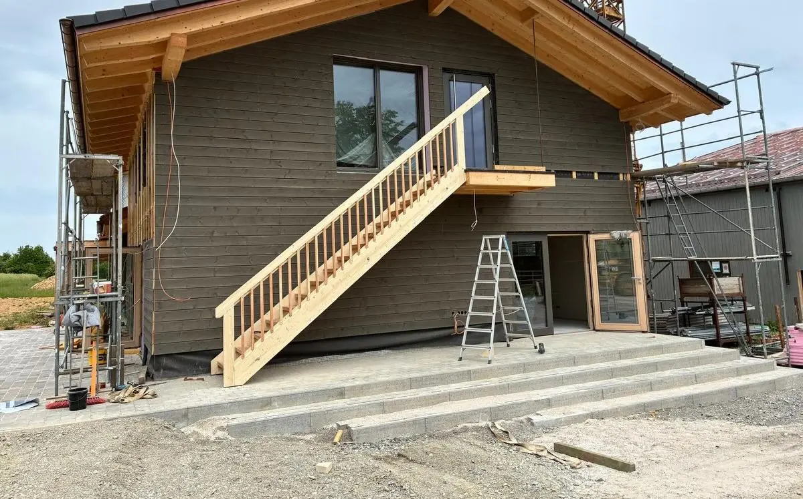
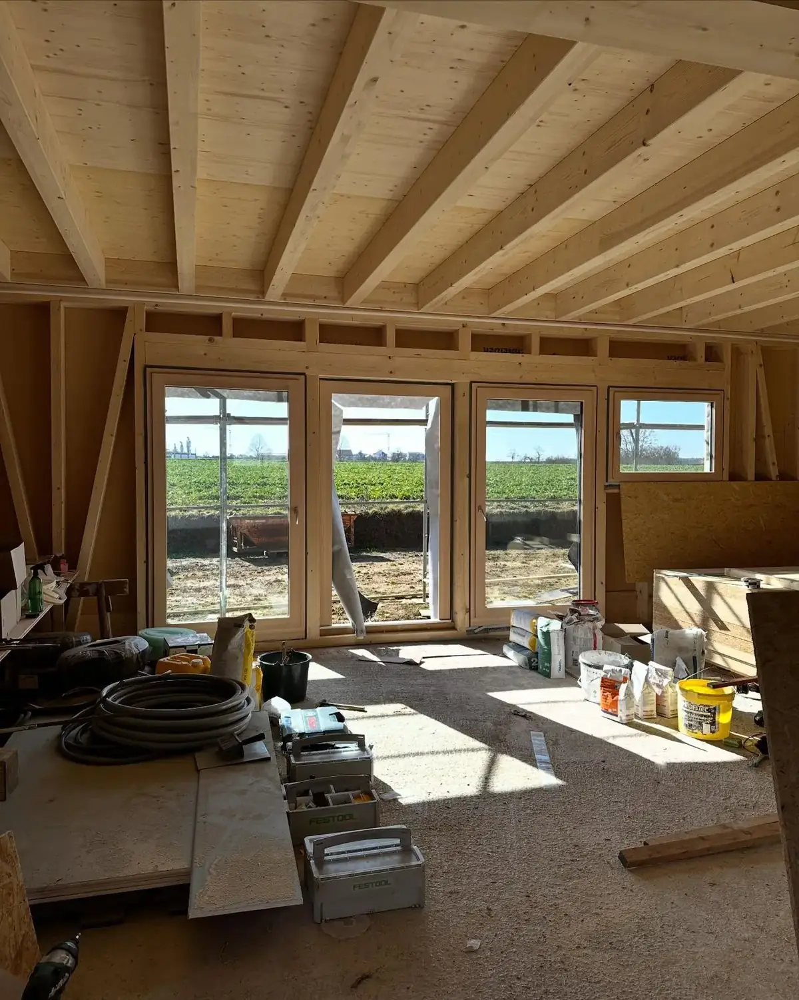

SB-Lädle in Deckenpfronn: rund um die Uhr geöffnet
Hofladen & Hofcafé in Deckenpfronn.
Frische Eier von unseren Legehennen, regionale Lebensmittel und ein Kaffee mit uns – ab 7. November in Mahden 1, Deckenpfronn.
Eröffnung Samstag, 7. November
10 bis 17 Uhr in Mahden 1, Deckenpfronn
Aperol Spritz am Eröffnungstag – dazu Spiegeleibrot
Tage bis zur Eröffnung
Öffnungszeiten ab 9. November
- Mo, Di, Do, Fr
- 9–12 und 14.30–17.30 Uhr
- Samstag
- 9–12 Uhr
- Mittwoch
- Ruhetag
Schneiders Hofladen & Hofcafé, Mahden 1, 75392 Deckenpfronn – direkt bei uns am Hühnerhof.
Was ihr bei uns bekommt
Direkt von unserem Legehennenbetrieb: frische Eier und regionale Produkte. So sah unser Sortiment bisher im Hofbus und auf den Märkten aus. Gelb mit Ei-Zeichen ist, was von unserem Hof kommt:
- Eier (vom Hof)
- Eierlikör (vom Hof)
- Äpfel & Birnen (vom Hof)
- Nudeln
- Linsen
- Mehl
- Honig
- Marmelade
- Brot
- Wurst
- Fleisch
- Käse
- Gemüse
- Wein
- Eis

Hofbus & Märkte
Ihr findet uns auch mit dem Hofbus und auf den Wochenmärkten.
Kurz & knapp
Schneiders Hofladen & Hofcafé ist der Hofladen mit Café von Hühnerhof Schneider, einem Familienbetrieb in dritter Generation mit Legehennen. Adresse: Mahden 1, 75392 Deckenpfronn bei Herrenberg (Landkreis Böblingen). Geöffnet ab 9. November 2026 Mo, Di, Do, Fr 9–12 und 14.30–17.30 Uhr; Samstag 9–12 Uhr. Mittwoch Ruhetag. Telefon 0177 2136695.
Wo kann ich in Deckenpfronn Eier kaufen?
Im Hofladen in Mahden 1 (ab 7. November 2026), rund um die Uhr im SB-Lädle in der Calwer Straße 27/1 und im Hofbus, der ebenfalls in der Calwer Straße 27/1 hält.
Wann hat der Hofladen geöffnet?
Ab 9. November: Mo, Di, Do, Fr 9–12 und 14.30–17.30 Uhr; Samstag 9–12 Uhr. Mittwoch Ruhetag. Am Eröffnungstag, Samstag 7. November 2026, von 10 bis 17 Uhr.
Wo hält der Hofbus?
Deckenpfronn: Mo, Do 16–18 Uhr; Freitag 8–12 Uhr; Samstag 10–12 Uhr (Calwer Straße 27/1, 75392 Deckenpfronn). Holzbronn: Dienstag 15–17 Uhr (Rathaus im Ortskern, Calw-Holzbronn). Gültlingen: Freitag 14.30–17.30 Uhr (Bushaltestelle Ortskern, Wildberg-Gültlingen).
Auf welchen Wochenmärkten seid ihr?
Böblingen: Mittwoch vormittags. Mittwochs auch mit frischem Obst und Gemüse (Elbenplatz, Böblingen). Gärtringen: Samstag 7–12 Uhr (Marktplatz, Gärtringen).
Kontakt & Anfahrt
Hofladen & Hofcafé: Mahden 1, 75392 Deckenpfronn
SB-Lädle: Calwer Straße 27/1, rund um die Uhr